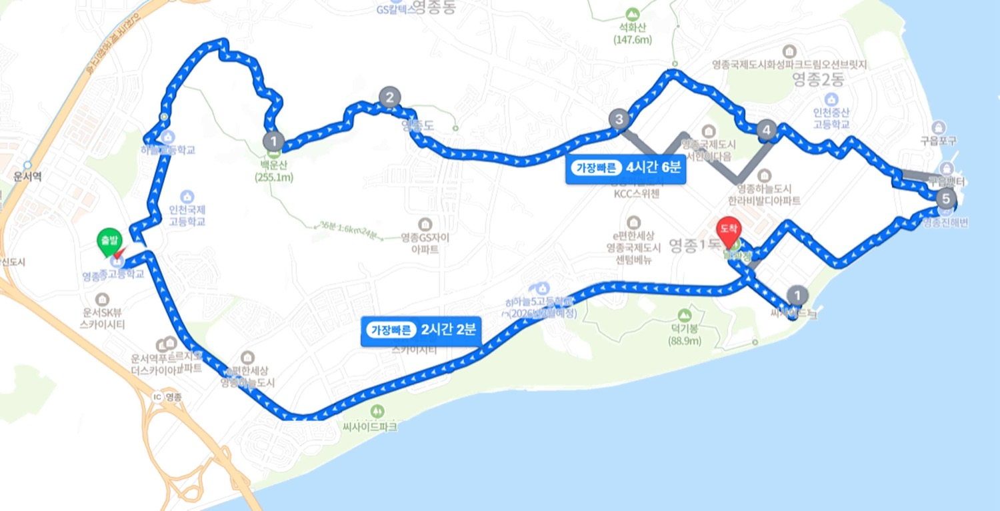
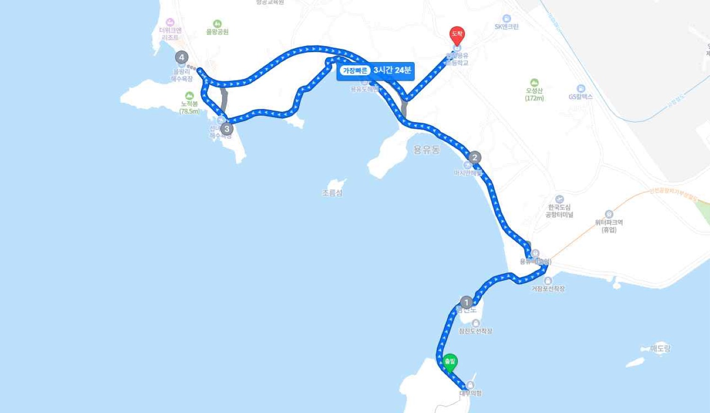

인천영종고등학교 · 교직원 회의 자료
교사 배치현황안전요원 15명 별도
교사 배치현황안전요원 5명 별도
영종 국제도시의 어제와 오늘 — 총 25km

| 시간 | 코스 및 내용 | 거리 |
|---|---|---|
| 08:10 | 등교 후 담임 출석 확인 (샌드위치·음료·간식) | |
| 08:10~08:15 | 교장 선생님 안전 당부 말씀 | |
| 08:15~08:25 | 운영·안전 지도단 소개 및 안전교육 | |
| 08:25~08:30 | 일정 안내, 스트레칭, 출발 선포 | |
| 08:30~09:30 | 학교 → 백운산 정상 | 3km |
| 09:30~09:40 | 백운산 정상 — 휴식 | |
| 09:40~12:30 | 백운산 → 용궁사 → 중산교차로 → 박석공원 → 영종진 (용궁사 생수) | 11km |
| 12:30~13:30 | 점심 — 하늘신도시 방앗간 한식뷔페 (생수·아이스크림) | |
| 13:30~14:50 | 씨사이드파크 → 족욕장 | 8km |
| 14:50~15:10 | 족욕장 — 휴식·간식, 학급별 캠페인 사진 촬영 | |
| 15:10~15:40 | 족욕장 → 학교 | 3km |
| 그룹 | 학급 | 제1지도(담임) | 제2지도 | 인원 |
|---|---|---|---|---|
| 1그룹 | 1반 | 김희연 | 양장관 | 25 |
| 2반 | 송창석 | 문필재 | 26 | |
| 3반 | 임하은 | 박정은 | 23 | |
| 2그룹 | 4반 | 김은서 | 박삼병 | 26 |
| 5반 | 정우철 | 박현미 | 23 | |
| 6반 | 고은화 | 김효곤 | 26 | |
| 7반 | 이은정 | 김진범 | 25 | |
| 3그룹 | 8반 | 이은지 | 서정주 | 26 |
| 9반 | 윤영은 | 오희찬 | 25 | |
| 10반 | 진소라 | 김양선 | 26 |
인천길탐방 연계코스 — 학급별 버스 이동
| 시간 | 내용 |
|---|---|
| 08:40~08:50 | 등교 후 담임 출석 확인 |
| 08:50~09:40 | 행사 안내 및 안전교육 |
| 09:40~10:00 | 버스 탑승 및 출발 준비 |
| 10:00~11:00 | 학급별 코스로 버스 출발 |
| 11:00~12:30 | 점심 — 코스별 인근 식당 |
| 12:30~14:30 | 인천길탐방 활동 (학급별 코스) |
| 14:30~15:30 | 탐방 종료 후 버스 탑승 |
인천대 미추홀 → 인하대 항공우주융합 → 연세대 국제 → 인천글로벌캠퍼스 → 인천재능대 송도 → 인천가톨릭대 송도국제
인천역 → 의선당 → 공화춘 → 대불호텔 → 인천개항박물관 → 근대건축전시관 → 한국근대문학관
센트럴파크역 → G타워 → 트라이볼 → 컴팩스마트시티(인천도시역사관) → 센트럴파크
| 학급 | 담당 | 학생 | 학급 | 담당 | 학생 |
|---|---|---|---|---|---|
| 2-1 | 양희균 | 27 | 2-6 | 이정아 | 30 |
| 2-2 | 최지영 | 29 | 2-7 | 고명원 | 29 |
| 2-3 | 조가비 | 27 | 2-8 | 곽아람 | 29 |
| 2-4 | 백수진 | 29 | 2-9 | 고다율 | 28 |
| 2-5 | 김찬겸 | 29 | 2-10 | 윤희진 | 28 |
학급당 버스 1대 · 승차 10:00 세계로 가는 교회 앞 · 최종 하차 14:30 출발 → 인천영종고
과거와 현재가 만나는 인천의 섬 — 총 25km · 1·2학년 희망자

| 시간 | 코스 및 내용 | 거리 |
|---|---|---|
| 08:10 | 등교 후 담임 출석 확인 (샌드위치·음료·간식) | |
| 08:10~08:20 | 출발 준비 (버스 체크) | |
| 08:20~08:55 | 학교 → 무의도 공영주차장 (버스·화장실) | 18km |
| 08:55~10:15 | 공영주차장 → 잠진도 → 마시안해변 진입 | 4.5km |
| 10:15~11:05 | 해변 청소 행군 (쓰레기봉투·단체사진) | 1.8km |
| 11:05~12:30 | 마시안해변 → 선녀바위 → 을왕해수욕장 (차량 통제) | 5km |
| 12:30~13:30 | 점심 — 을왕 인근 식당 또는 밥차 | |
| 13:30~15:00 | 을왕해수욕장 → 용유초 (마지막 도보·염전) | 7km |
| 15:00~15:20 | 용유초 — 휴식·음료 | |
| 15:20~15:50 | 용유초 → 학교 (버스) | 16km |
| 15:50~16:20 | 학교 강당 — 하교 지도 |
| 그룹 | 2학년 지도교사 | 인원 | 1학년 지도교사 | 인원 |
|---|---|---|---|---|
| 1그룹 | 김시형, 임재근 | 14 | 양장관, 이은지 | 11 |
| 2그룹 | 김진범, 최재호 | 13 | 고은화, 문필재 | 11 |
| 3그룹 | 박현미, 임정숙 | 13 | 박삼병, 최경호 | 11 |
| 4그룹 | 고명원, 이원순 | 13 | 윤정화, 이지훈 | 10 |
| 5그룹 | 박정은, 이소망 | 13 | 김양선, 정우철 | 10 |